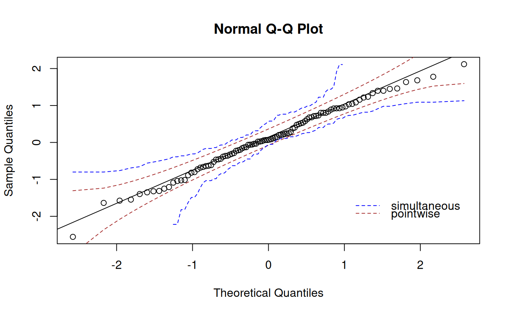

Create the confidence bands for a one-sample qq plot
create.qqplot.fit.confidence.interval.RdReturns the values of constructing the confidence bands for a one-sample qq plot
Usage
create.qqplot.fit.confidence.interval(x, distribution = qnorm, conf = 0.95,
conf.method = "both", reference.line.method = "quartiles");Arguments
- x
A numeric vector
- distribution
A quantile function that takes a vector of probabilities as argument and produces the corresponding quantiles from a theoretical distribution, defaults to "qnorm", that is normal distribution.
- conf
Confidence level, default to 0.95
- conf.method
Methods used to draw confidence bands and must be one of "simultaneous", "pointwise", "both"(default).
- reference.line.method
Methods used to draw reference line and must be one of "quartiles"(default), "diagonal", "robust".
Warning
Note that this function works only for a single panel qq plot, not for grouped data and multi-qq plot.
Examples
tmp.x <- rnorm(100);
tmp.confidence.interval <- create.qqplot.fit.confidence.interval(tmp.x);
qqnorm(tmp.x);
qqline(tmp.x);
lines(tmp.confidence.interval$z, tmp.confidence.interval$upper.pw, lty = 2, col = "brown");
lines(tmp.confidence.interval$z, tmp.confidence.interval$lower.pw, lty = 2, col = "brown");
lines(tmp.confidence.interval$z[tmp.confidence.interval$u],
tmp.confidence.interval$upper.sim, lty = 2, col = "blue");
lines(tmp.confidence.interval$z[tmp.confidence.interval$l],
tmp.confidence.interval$lower.sim, lty = 2, col = "blue");
legend(1, -1.5, c("simultaneous", "pointwise"), col = c("blue", "brown"), lty = 2, bty = "n");
